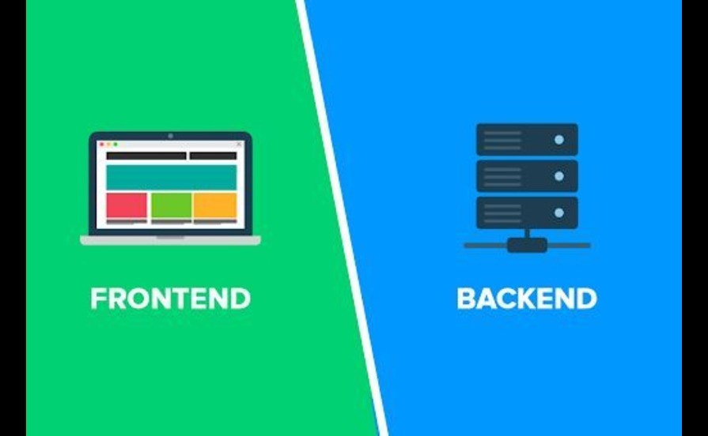

Front-End vs Back-End vs Full-Stack — What's the Difference?
If you're new to the world of web and app development, you've probably come across the terms front-end, back-end, and full-stack. These are common roles in software development, but the differences between them can be confusing at first. In this blog, I’ll break down what each one means and how they work together to build modern digital products.
What is Front-End Development?
Front-end development focuses on the user interface (UI) — everything you see and interact with on a website or app. This includes layouts, colors, fonts, buttons, navigation, and animations. Front-end developers work to ensure websites are not only visually appealing but also responsive and accessible across devices.
Common front-end technologies include:
- HTML – for structure
- CSS – for styling
- JavaScript – for interactivity
- Frameworks/Libraries: React, Vue.js, Angular
What is Back-End Development?
Back-end development is all about what happens behind the scenes. It powers the logic, database operations, and server interactions that make an application work. Back-end developers handle things like user authentication, data storage, server-side logic, and API integration.
Common back-end technologies include:
- Programming Languages: Node.js, Python, PHP, Ruby, Java
- Frameworks: Express.js, Django, Laravel, Spring
- Databases: MySQL, PostgreSQL, MongoDB
- APIs & Server Logic
What is Full-Stack Development?
A full-stack developer is someone who works on both the front-end and back-end of an application. They have the skills to build complete, end-to-end solutions — from designing interfaces to handling database queries and deploying the app on a live server.
Being a full-stack developer means having a broad understanding of both user experience and system architecture. It's a highly versatile role and ideal for freelancers, startup developers, and anyone looking to build complete products independently.
How They Work Together
In most projects, front-end and back-end developers collaborate closely:
- Front-end developers build what users interact with
- Back-end developers ensure the functionality behind the interface
- APIs serve as the bridge between the two
- Full-stack developers can handle both sides and manage the integration
Which Path Should You Choose?
It depends on your interests. If you enjoy design, visuals, and user interaction, front-end might be for you. If you're more into logic, data, and systems, then back-end may be a better fit. If you like both and enjoy learning new things, full-stack development could be your ideal path.
Conclusion
Understanding the differences between front-end, back-end, and full-stack development is essential whether you're hiring a developer or becoming one. Each role plays a crucial part in building modern web and mobile applications.
As a full-stack developer, I enjoy the flexibility to work across the entire development process — from designing clean, responsive UIs to implementing efficient server-side logic. It's a challenging and rewarding journey that lets me create complete, functional, and scalable products.